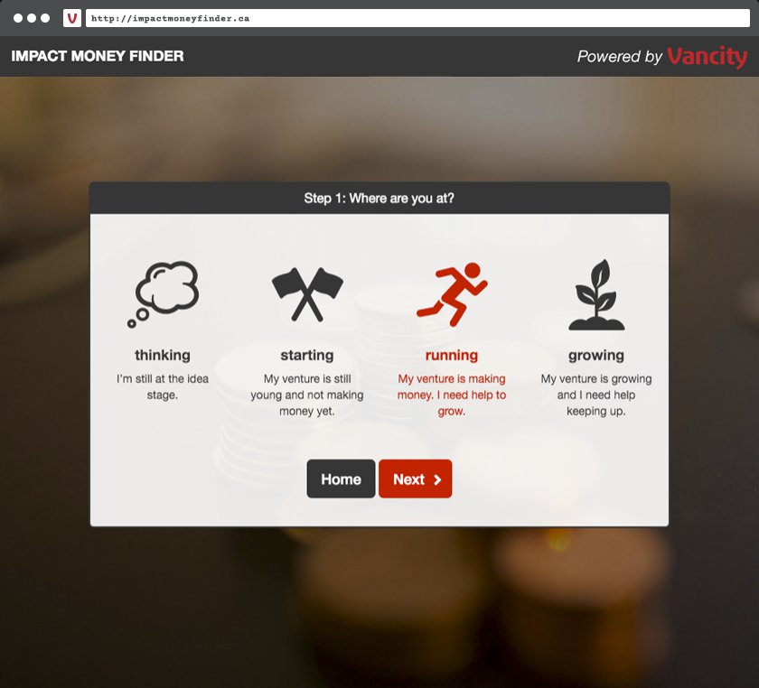

Vancity — Impact Money Finder
Helping small business owners and organization stakeholders find 'Impact Money' through a responsive online app.
Vancity uses the term 'Impact Money' to describe ethically-responsible financing sources. As the Lower Mainland's largest Credit Union, Vancity researches funding sources based on 'Impact Money' criteria, storing them in an online database. The Impact Money Finder gives the general public access to Vancity's database in a user-friendly way.
tryl.es took over an existing app that while functional, lacked in aspects of UI/UX (User Interface/Experience) design and Information Architecture.
Assessment revealed the majority of database entries were not being accessed by users because they were not featured prominently within the app.
tryl.es determined these under-utilized resources could be better shown by dividing the app into 'paths', which give equal weight to database entries.
The 'Sources' path refines database selections by asking users a series of questions
While the 'Resources' path uses icons to help users find helpful and free business resources — such as legal document templates and tax-planning guides.

The site is optimized for mobile and touch devices, and addresses concerns for screen-assisted readers.
Conclusion
'Impact Money' is out there! And Impact Money Finder can help you find it. Now in an 'intermediate' phase, the app has lots of room for new features that can help business owners and organization stakeholders (you?) connect with Impact Money.